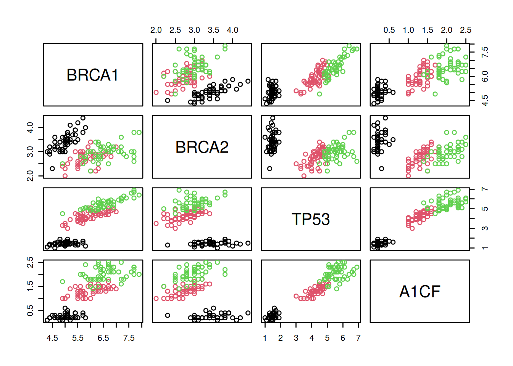
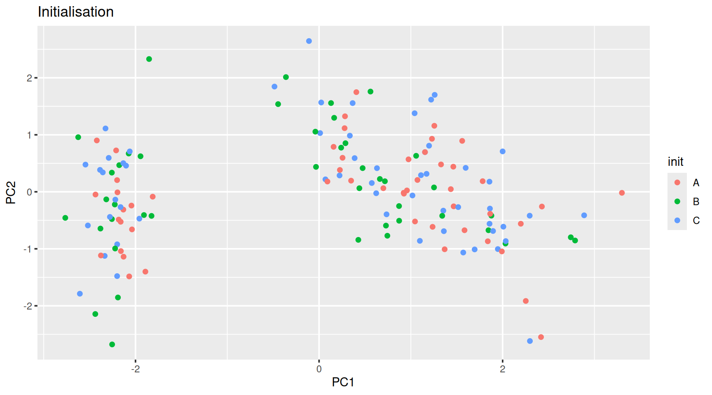

Chapter 9 Unsupervised learning: clustering
9.1 Introduction
After learing about dimensionality reduction and PCA, in this chapter we will focus on clustering. The goal of clustering algorithms is to find homogeneous subgroups within the data; the grouping is based on similiarities (or distance) between observations. The result of a clustering algorithm is to group the observations (features) into distinct (generally non-overlapping) groups. These groups are, even if imperfect (i.e. ignoring intermediate states) are often very useful in interpretation and assessment of the data.
In this chapter we will:
- Introduce clustering methods.
- Learn how to apply a widely used non-parametric clustering algorithms k-means.
- Learn how to use recursive clustering approaches known as hierarchical clustering.
- Observe the influence of clustering parameters and distance metrics on the outputs.
- Provide real-life example of how to apply clustering on omics data.
Clustering is a widely used techniques in many areas of omics data analysis. The How does gene expression clustering work? (D’haeseleer 2005D’haeseleer, P. 2005. “How Does Gene Expression Clustering Work?” Nat Biotechnol 23 (12): 1499–1501. https://doi.org/10.1038/nbt1205-1499.) is a useful reading to put the following chapter into context.
9.2 How to measure similarities?
Clustering algorithms rely on a measurement of similarity between between features to group them into clusters. An important step is thus to decide how to measure these similarities. A range of distance measurements are available:
The Euclidean distance between two points \(A = (a_{1}, \ldots , a_{p})\) and \(B = (b_{1}, \ldots , b_{p})\) in a \(p\)-dimensional space (for the \(p\) features) is the square root of the sum of squares of the differences in all \(p\) coordinate directions:
\[ d(A, B) = \sqrt{ (a_{1} - b_{1})^{2} + (a_{2} - b_{2})^{2} + \ldots + (a_{p} - b_{p})^{2} } \]
The Minkovski allows the exponent to be \(m\) instead of 2, as in the Euclidean distance:
\[ d(A, B) = ( (a_{1} - b_{1})^{m} + (a_{2} - b_{2})^{m} + \ldots + (a_{p} - b_{p})^{m} )^{\frac{1}{m}} \]
The maximum (or \(L_{\inf}\)) distance is the maximum of the absolute differences between coordinates:
\[ d(A, B) = max_{i} | a_{i} − b_{i} | \]
The Manhattan (or City Block, Taxicab or \(L_{1}\)) distance takes the sum of the absolute differences in all coordinates:
\[ d(A, B) = | a_{1} − b_{1} | + | a_{2} − b_{2} | + \ldots + |a_{p} − b_{p}| \]
When computing a binary distance, the vectors are regarded as
binary bits, with non-zero elements are on and zero elements are
off. The distance is the proportion of bits in which only one is on
amongst those in which at least one is on. For example, the binary
distance between vectors x and y is 0.4 because out of the 5 pairs
of bits that have at least a single 1 (all but the second elements),
2 have only one (the first and fifth).
The canberra distance, that computes the sum of the difference to the sum of each the elements of vectors:
\[ \sum{ \frac{ | x_{i} - y_{i} | }{ | x_{i} | + | y_{i} | } } \]
Correlation based distance uses the Pearson correlation (see the
cor() function and chapter 6) or its absolute value
and transform it in into a distance metric:
\[ d(A, B) = 1 - cor(A, B) \]
These are some of the distances available in the dist function, or
in the bioDist package. See also section 5.3 from (Holmes and Huber 2019Holmes, Susan, and Wolfgang Huber. 2019. Modern Statistics for Modern Biology. Cambridge Univeristy Press.) for
additional details.
► Question
Generate the 5 data points along 2 dimensions as illustrated below and
calculate all their Euclidean pairwise distance using
dist(). Interprete the output of the function. What class is it?
set.seed(111)
samples <- data.frame(x = rnorm(5, 5, 1),
y = rnorm(5, 5, 1))
plot(samples, cex = 3)
text(samples$x, samples$y, 1:5)Figure 9.1: A simulated dataset composed of 5 samples.

► Solution
► Question
Calculate the position of the average sample, visualise it on the figure above. Which samples are respectively the closest and furthers to the average sample?
► Solution
9.3 k-means clustering
The k-means clustering algorithm11 We will learn how the algorithm works below. aims at partitioning n observations into a fixed number of k clusters. This algorithm will find homogeneous clusters.
In R, we use
where
-
xis a numeric data matrix -
centersis the pre-defined number of clusters - the k-means algorithm has a random component and can be repeated
nstarttimes to improve the returned model
To learn about k-means, let’s use the giris dataset, that provides
the expression of 4 genes in 150 patients grouped in categories A, B
or C.
Figure 9.3: The giris dataset describes 150 patients by the expression of 4 genes. Each patient was assigned a grade A, B or C.
► Question
Run the k-means algorithm on the giris data, save the results in a
new variable cl, and explore its output when printed. What is the
class of cl?
► Solution
► Question
The actual results of the algorithms, i.e. the cluster membership can
be accessed in the cluster element of the clustering result
output. Extract and interpret these data.
► Solution
► Question
Produce 2 PCA plots, colouring one with the original grade, and the other one with the results of the clustering algorithm. Compare the two plots.
► Solution

► Question
Compare the categories and clustering results and count the number of matches/mismatches.
► Solution
How does k-means work
The algorithm starts from a matrix of n features in p observations and proceeds as follows:
Initialisation: randomly assign the p obervations to k clusters.
Figure 9.5: k-means random intialisation
Iteration:
- Calculate the centre of each subgroup as the average position of all observations is that subgroup.
- Each observation is then assigned to the group of its nearest centre.
It’s also possible to stop the algorithm after a certain number of iterations, or once the centres move less than a certain distance.

Figure 9.6: k-means iteration: calculate centers (left) and assign new cluster membership (right)
Termination: Repeat the iteration steps until no point changes its cluster membership.
Figure 9.7: k-means convergence (credit Wikipedia).

9.3.1 Model selection
Due to the random initialisation, one can obtain different clustering results.

Figure 9.8: Different k-means results on the same girsi data
When k-means is run multiple times (as set by nstart), the best
outcome, i.e. the one that generates the smallest total within
cluster sum of squares (SS), is selected. The total within SS is
calculated as:
For each cluster results:
- for each observation, determine the squared euclidean distance to centre of cluster
- sum all distances
This value is available as tot.withinss in a kmeans result:
## [1] 78.85144Note that this is a local minimum; there is no guarantee to obtain a global minimum.
9.3.2 How to determine the number of clusters
- Run k-means with
k=1,k=2, …,k=n - Record total within SS for each value of k.
- Choose k at the elbow position, as illustrated below.
Figure 9.9: Total within sum of squared distances for different values is k.

► Question
Calculate the total within sum of squares for k from 1 to 5 for our
giris test data, and reproduce the figure above.
► Solution
See also this interactive K-Means Clustering Explorable Explainer to help you understand the algorithm, its parameters and dig into some additional details.
9.4 Hierarchical clustering
9.4.1 How does hierarchical clustering work
Initialisation: Starts by assigning each of the n points its own cluster
Iteration
- Find the two nearest clusters, and join them together, leading to n-1 clusters
- Continue the cluster merging process until all are grouped into a single cluster
Termination: All observations are grouped within a single cluster.
Figure 9.10: Hierarchical clustering: initialisation (left) and colour-coded results after iteration (right).

The results of hierarchical clustering are typically visualised along a dendrogram12 Note that dendrograms, or trees in general, are used in evolutionary biology to visualise the evolutionary history of taxa. In this course, we use them to represent similarities (based on distances) and don’t assess any evolutionary relations between features or samples., where the distance between the clusters is proportional to the branch lengths.
Figure 9.11: Visualisation of the hierarchical clustering results on a dendrogram

In R:
- Calculate the distance using
dist, typically the Euclidean distance. - Apply hierarchical clustering on this distance matrix using
hclust.
► Question
Apply hierarchical clustering on the giris data and generate a
dendrogram using the dedicated plot method.
► Solution

The method argument to hclust defines how the clusters are grouped
together, which depends on how distances between a cluster and an
obsevation (for example (3, 5) and 1 above), or between cluster
(for example ((2, 4) and (1, (3, 5)) above) are computed.
The complete linkage (default) method defines the distances between clusters as the largest one between any two observations in them, while the single linkage (also called nearest neighbour method) will use the smallest distance between observations. The average linkage method is halfways between the two. Ward’s method takes an analysis of variance approach, and aims at minimising the variance within clusters.
See section 5.6 of Modern Statistics of Modern Biology (Holmes and Huber 2019Holmes, Susan, and Wolfgang Huber. 2019. Modern Statistics for Modern Biology. Cambridge Univeristy Press.) for further details.
► Question
Using the giris example, compare the linkage methods presented above.
► Solution

9.4.2 Defining clusters
After producing the hierarchical clustering result, we need to cut the tree (dendrogram) at a specific height to defined the clusters. For example, on our test dataset above, we could decide to cut it at a distance around 1.5, with would produce 2 clusters.
Figure 9.13: Cutting the dendrogram at height 1.5.

In R we can us the cutree function to
- cut the tree at a specific height:
cutree(hcl, h = 1.5) - cut the tree to get a certain number of clusters:
cutree(hcl, k = 3)
► Question
Cut the iris hierarchical clustering result at a height to obtain 3 clusters by setting
h.Cut the iris hierarchical clustering result at a height to obtain 3 clusters by setting directly
k, and verify that both provide the same results.
► Solution

9.5 Pre-processing
Many of the machine learning methods that are regularly used are sensitive to difference scales. This applies to unsupervised methods as well as supervised methods.
A typical way to pre-process the data prior to learning is to scale the data (see chapter 5), or apply principal component analysis (see chapter 8).
In R, scaling is done with the scale function.
► Question
Using the mtcars data as an example, verify that the variables are
of different scales, then scale the data. To observe the effect
different scales, compare the hierarchical clusters obtained on the
original and scaled data.
► Solution


9.6 Additional exercises
► Question
Load the small
g3data set that provides expression profiles of genes 1 to 3 in samples 1 to 5 and visualise these.Compute and compare the distances between the genes using the Euclidean and correlation distances (these can be calculated, for example, with the
eucandcor.distfrom thebioDistpackage). Interpret these distances based on the visualisation above.Compare the effect of scaling on these distances. Visualise the scaled and unscaled profiles to help interpret the distances.
► Question
Following up the exercise above, produce and interpret the four
hierarchical clusterings, build using Euclidean and correlation
distances (these can be calculated, for example, with the euc and
cor.dist from the bioDist package).
► Question
An important caveat of clustering is that a clustering algorithm such as k-means will always find clusters, even when there is none. Illustrate this by creating a 2-dimensional random data by generation a matrix of 100 rows and 2 columns from N(0, 1) and searching for 2, 3, 4, 5 and 6 cluster. Visualise these results and assess whether they look convincing or not.
► Question
Using the same value k = 3, verify if k-means and hierarchical clustering
produce the similar or identical results on the giris data. Visualise the
two sets of results on PCA plots.
Which one, if any, is correct?
► Question
Load the
mulvey2015_sedata from thepRolocdatapackage. The goal of this exercise is to identify proteins that have a specific expression pattern over the cell development time. Do do so, permform a k-means clustering setting k = 12.Visualise the expression profiles over the development time for the 12 clusters identified above. See below for an example of such a visualisation.
► Question
Using the hyperLOPIT2015_se data from the pRolocdata package:
Filter out all features that have an
unknownunder the feature variablemarkers.Then, for all the marker classes (organelles), calculate an average profile by computing the mean value for each column.
Perform a hierarchical clustering showing the relation between the average marker profiles, such as shown below.

Page built: 2024-12-09 using R version 4.4.1 (2024-06-14)